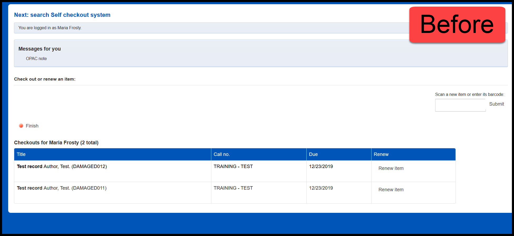
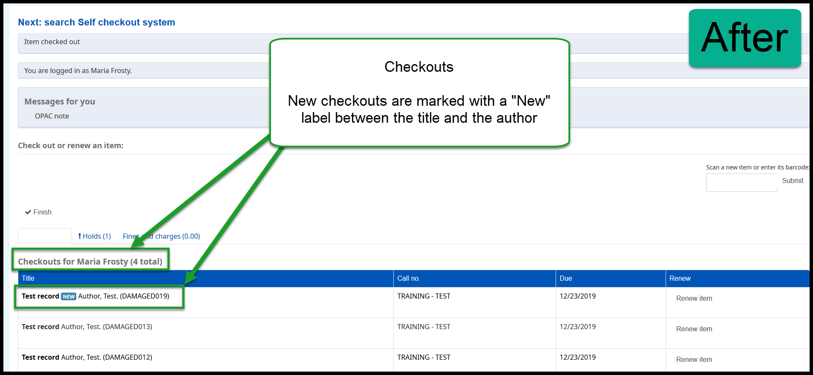
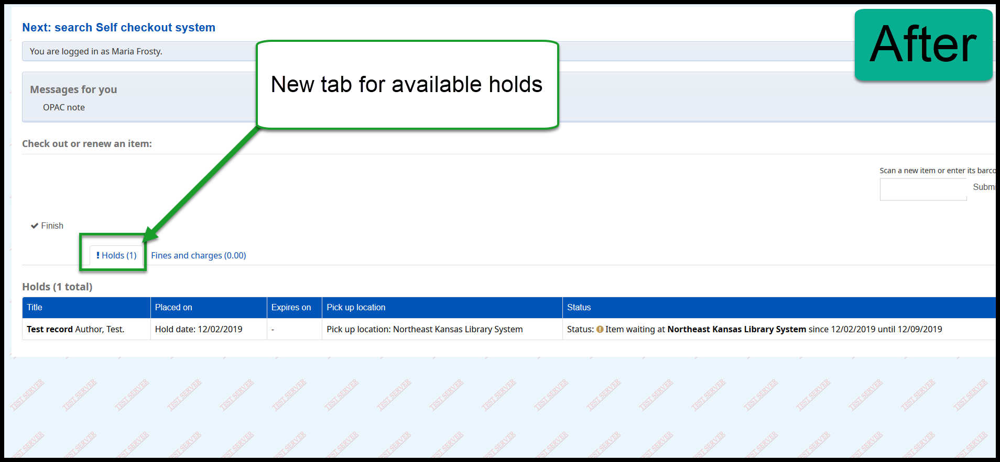
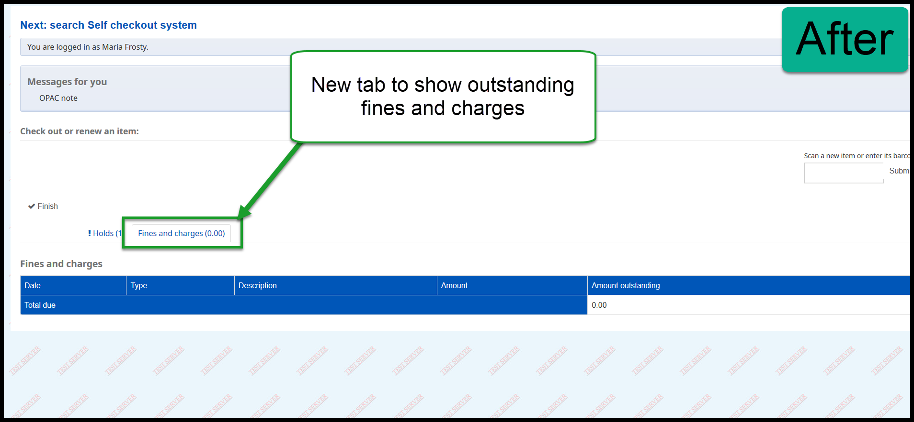

Koha Upgrade - Self check changes¶
There are some changes to the built-in self-check system.
Self check Changes¶
There are several changes to the self-check system.
Currently, when someone logs into the self-check system, this is what it looks like:
After the upgrade, when a patron checks out items, new items will be marked with a “New” label.
After the upgrade, if the patron has any requests on the hold shelf waiting to be picked up, those request will appear on a new “Holds” tab.
After the upgrade, patrons will be able to see any outstanding fees and their fee history on a new “Fees and charges” tab.
Frequently asked questions¶
- Q: Koha has a built in self check-out system?
- A: Yes, Koha has a built in self check-out system. It also has a self check-in system. We have several libraries using the built in self-checkout system.
- Q: How do I use the built in self check-out sytem?
- A: Contact us at nexthelp@nekls.org for more information.